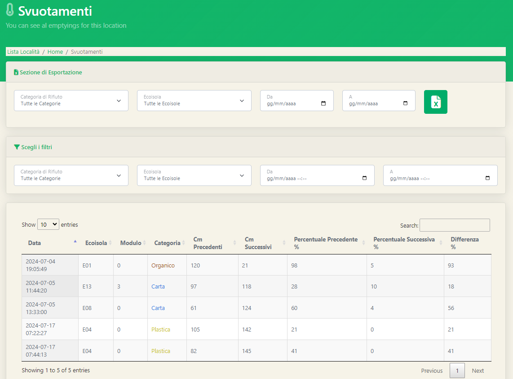

Molto simile alla sezione dei conferimenti, sul software è presente anche una sezione che raccoglie le informazioni relative agli svuotamenti delle Ecoisole. Nella prima parte della pagina è possibile nuovamente notare la sezione di esportazione e quella di filtraggio precedentementevista per i conferimenti.  Nella seconda parte della pagina la tabella riassume gli svuotamenti che sono stati effettuati indicando: